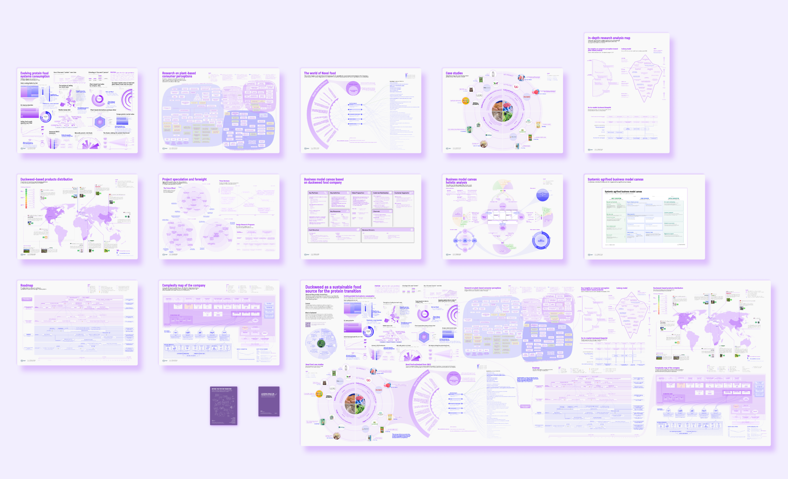
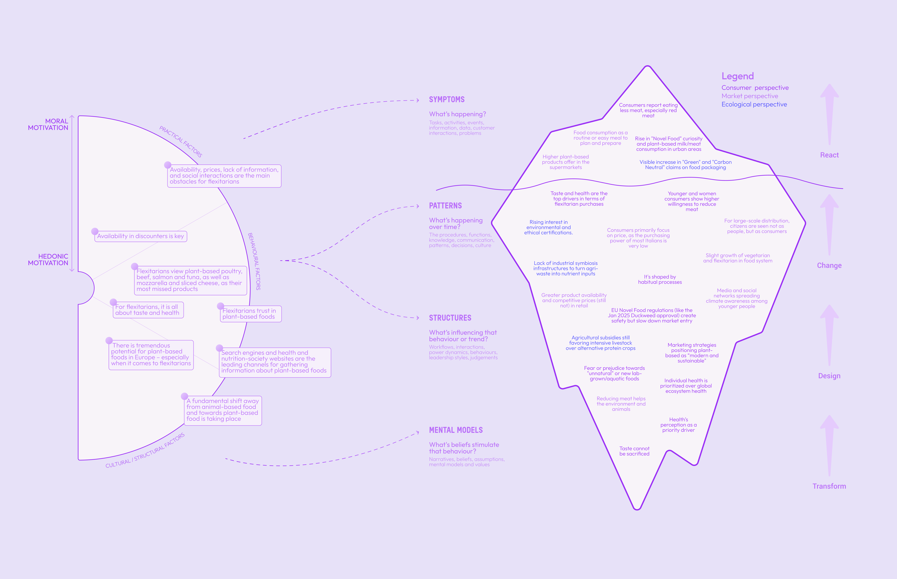
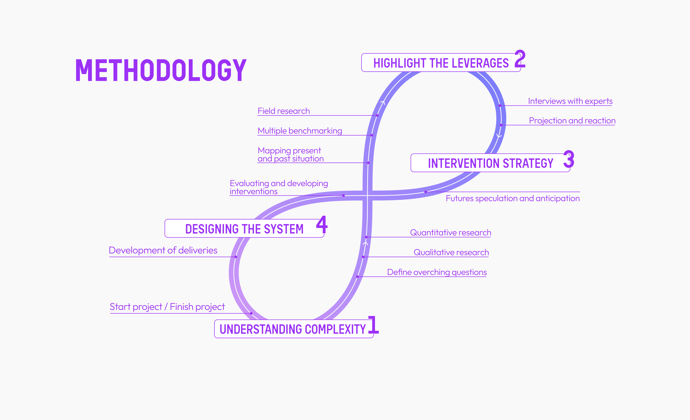
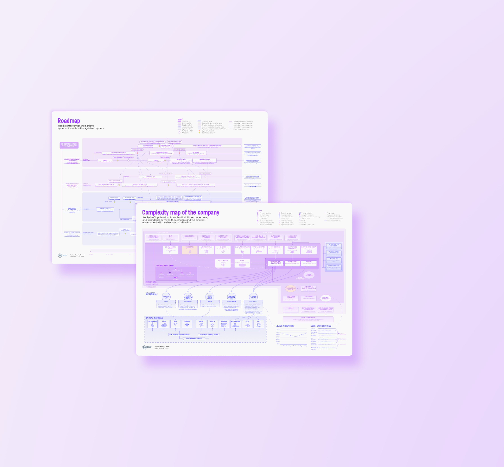
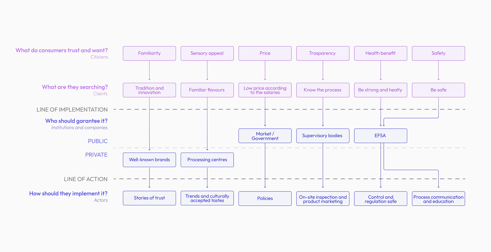

Systemic & Strategic Design · 2026
Beyond the
Protein Transition
A systemic intervention for a symbiotic duckweed business for human consumption in the food-system complexity
Agri-food systems face interconnected crises — from climate impacts to massive food waste — that demand an urgent energy and protein transition. From a systemic and ecological perspective, this research explores duckweed (EU Novel Food, 2025) as a strategic alternative protein with a high nutritional profile and superior sustainability.
Positioned at the intersection of Systems-Oriented Design and Systemic Design, the methodology combines Gigamapping and Strategic Foresight to navigate the complexity of the Italian agri-food landscape.
The study culminates in a roadmap of systemic interventions and a symbiotic business model aligned with One Health principles — integrating human, animal and ecosystem health.

Section 01 · Understanding complexity
Mapping the Italian agri-food system from many angles.
Field research, quantitative and qualitative studies, benchmarking and expert interviews were combined to define overarching questions and develop an intervention strategy. Consumer perception of plant-based products was analysed through the Iceberg Model, revealing how visible behaviours are driven by deeper mental models around health, taste, price and moral motivation.
The methodology followed four phases: Understand Complexity → Design the System → Intervention Strategy → Foresight & Anticipation. EU Novel Food regulations create safety but slow market entry, while subsidies still favour intensive livestock — making systemic change both urgent and structurally challenging.


Section 02 · One Health
One Health — a single health for people, animals, ecosystems.
One Health is an integrated philosophy that optimises the health of ecosystems, people and animals together, rethinking these as a single health that helps humanity thrive.
A key outcome is the redesign of the Business Model Canvas into a systemic tool — the SABMC (Systemic Agri-food Business Model Canvas) — that moves beyond economic profit to recognise the deep interdependence between society, environment and economy. The result: a methodological shift toward long-term visions that transforms the food crisis into a regenerative opportunity.
One Health diagram & SABMC canvas
Upload `img/protein_d.png`
Section 03 · Gigamap & foresight
A dynamic tool for sharing complexity.
The Gigamap was designed as a dialogue tool for sharing complexity and facilitating discussion between researchers, companies and institutions.
Strategic Foresight was used to explore four future scenarios ranging from possible to preferable — shaped by social media, technological and food innovations, and the shifting of global eating habits.
Gigamap — full overview
Upload `img/protein_e.png`
Foresight scenarios — quadrant
Upload `img/protein_f.png`
Section 04 · Outcomes
Three outcomes — strategy, map, toolkit.
1 · Intervention Strategy — a concrete action plan to build a symbiotic startup in the Torino area, focused on cultivating a plant with high nutritional profile and superior sustainability.
2 · Gigamap — a dynamic dialogue tool to understand systemic complexity and facilitate discussion between researchers, companies and institutions.
3 · Systemic Toolkit for Regenerative Ventures — including the SABMC, a canvas for representing a regenerative business in agribusiness through the lens of systems thinking.

Toolkit cards
Upload `img/protein_i.png`
SABMC canvas
Upload `img/protein_j.png`
Section 05 · Blueprint
A go-to-market blueprint for duckweed.
The Go-to-Market Blueprint maps what consumers trust and want — familiarity, sensory appeal, price, transparency, health benefit, safety — against what they are searching for and who should guarantee it at public and private levels.
The line of implementation identifies institutions and companies — market/government, supervisory bodies, well-known brands, processing centres — while the line of action defines the levers: trust storytelling, culturally accepted tastes, policies, on-site inspection, process communication and education.
